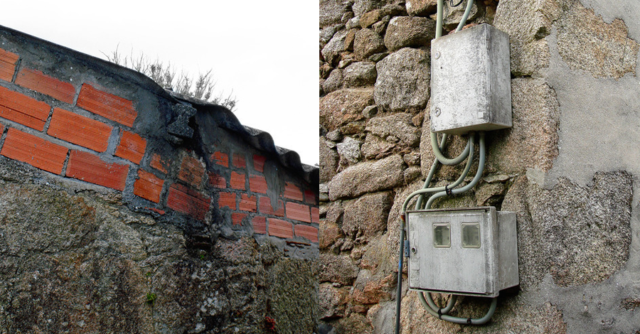

This post of mine that I'm recovering today was published 10 years ago on the Canibalismo Patrimonial Periférico blog of the Galician newspaper Praza.gal. At the time, in addition to my work at Arinspunk, I was heavily involved in Niquelarte, a collective that worked with material and immaterial heritage in a somewhat unorthodox manner 😬

In our country, we journeyed from tradition to contemporaneity abruptly, without transition. Stone, wood, tile, flax met with cement, aluminum, corrugated sheets, nylon, and the new and the old were separated but also connected in a deep scar.
Some called it "feísmo" (ugliness) but we must speak clearly, that's just intellectual trash (one more) spewed from the Polígono Industrial de Sabón. Why ugly? Because it didn't conform to a beauty standard that institutions never cared about? Why can't our rural areas and our towns be transformed into heritage theme parks like many streets in Santiago de Compostela? Because we deface the postcard??
We could think that their assertion was part of a larger strategy of assimilation and uniformity (which exists), but that would be giving them too much credit. The capitalist project that our elites pursued during the 20th century achieved, from a capitalist perspective, mediocre results, and at the end of the process, they tried to cover up part of their failure by claiming that what was a rushed adaptation by the people in response to their neglect was something ugly that we should erase. Poor them...
The scar is there, entirely evident, and cannot be erased. But it doesn't make sense to discuss whether it's more or less ugly. That's not what matters about a scar. The meaningful interpretation, besides reminding us that despite everything, we are alive, is that every scar holds a story, a story in this case that is our own.
Let's stop looking at it as something to be ashamed of and let's delve into it. We should know more about who we were and are, and it should help us create our own narrative. Because there, in the wound hastily healed with salty and bitter airs, we will find beauty. Not the universal kind, that doesn't exist, but our own.